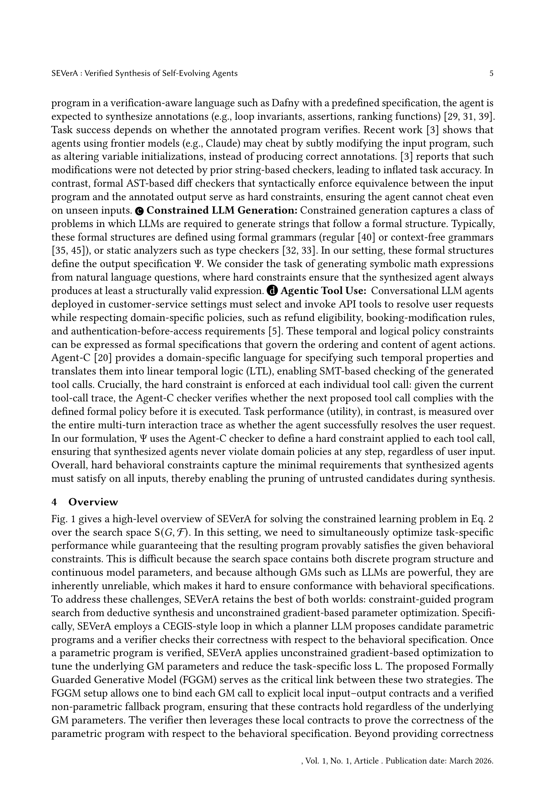

저자: Debangshu Banerjee, Changming Xu, Gagandeep Singh | 날짜: 2026-03-26 | Journal: arXiv preprint | DOI: N/A | arXiv: 2603.25111

Figure 1
자기진화(self-evolving) LLM 에이전트는 프로그램을 자동 합성하고 파라미터를 스스로 튜닝하지만, 이 과정에서 행동 사양(behavioral specification)이 보장되지 않는다는 치명적 공백이 있다. SEVerA는 이를 해결하기 위해 Search-Verify-Learn 3단계를 도입하였다: planner LLM이 FGGM(Formally-Guaranteed Generative Model) 추상화를 활용해 에이전트 프로그램을 합성하고, Dafny 검증기가 모든 파라미터 값에 대해 사양 충족을 형식적으로 증명하며, 검증된 프로그램에서 unconstrained 최적화로 파라미터를 학습한다. Dafny 프로그램 검증(HumanEvalDafny) 태스크에서 기존 방법 대비 Verif. & NoDiff 정확도를 +10.1%p(97.0%) 향상시키고 violation을 0%로 낮추었으며, GSM-Symbolic 수학 추론에서는 +21.3%p(66.0%) 정확도 향상과 violation 0%를 동시에 달성하였다.
Figure 1
Figure 1: SEVerA의 3단계 파이프라인 개요. (1) Search: planner LLM이 FGGM 추상화를 사용해 후보 에이전트 프로그램 합성, (2) Verify: Dafny 검증기가 행동 사양 충족 여부를 형식 증명, (3) Learn: 검증된 프로그램에서 파라미터 최적화.
| 항목 | 점수 |
|---|---|
| Novelty | 5/5 |
| Technical Soundness | 5/5 |
| Significance | 4/5 |
| Clarity | 4/5 |
| Overall | 5/5 |
총평: 자기진화 LLM 에이전트에 형식적 정확성 보장을 최초로 부여한 이론적·실험적으로 탄탄한 연구로, FGGM 추상화와 Search-Verify-Learn 파이프라인은 안전한 AI 에이전트 합성을 위한 새로운 패러다임을 제시한다. 현재 Dafny 문법 제약이 실용적 한계이나, 기초 프레임워크로서의 기여는 매우 높다.